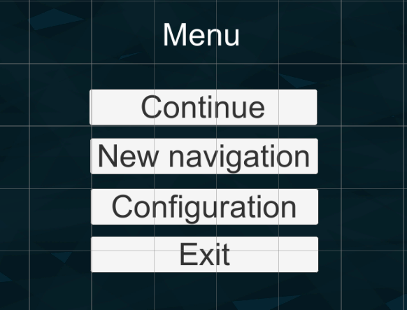
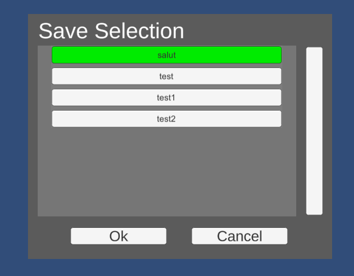
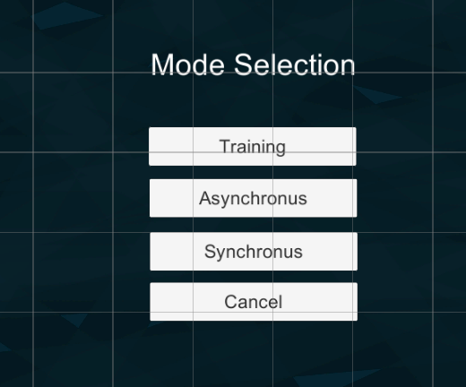
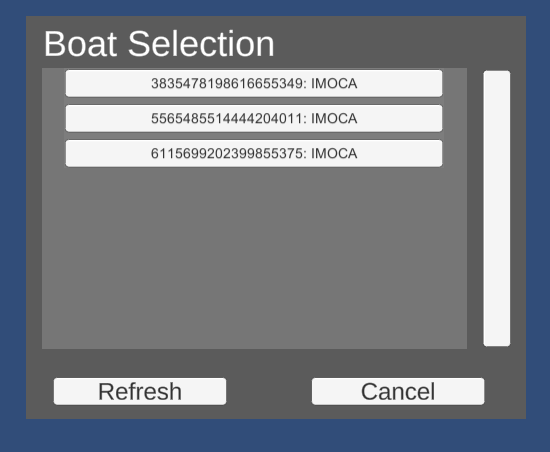
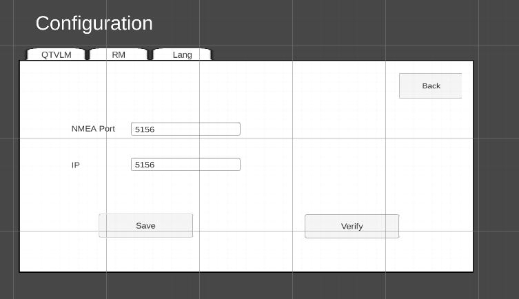
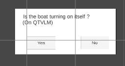

Fonctionnalités hors course
Menu
Dans le menu nous avons plusieurs chemins possibles :
Continuer charge la liste des scènes sauvegardées.
Nouvelle navigation charge la scène de sélection de la liste des bateaux.
Configuration charge la scène de configuration.
Quitter quitte l'application.

Sauvegarde
Affiche les sauvegardes disponibles à jouer.
Pour en selectionner une : cliquer sur le bouton de la sauvegarde voulue, puis appuyer sur "ok". "cancel" fait un retour sur la page de menu.

Selection du mode
Plusieurs choix du mode possible. Mais pour le moment seulement le type entraînement est implémenté. Après appuis sur entraînement nous arrivons sur la scène de selection du type de bateau.

Selection du type de bateau
Affiche les types de bateau disponibles à jouer.
Pour en selectionner un : cliquer sur le bouton du type de bateau voulu, puis appuyer sur "ok". "cancel" fait un retour sur la page de menu.

Configuration
Trois panels sont à disposition de l'utilisateur :
- QTVLM : permet le changement du port et ip auxquelles les trames NMEA sont émises
- RM : permet le changement du port et ip à la connexion du race manager (ne pas changer pour le moment)
- Lang : permet une selection de langue entre français et anglais.

Le bouton "verify" sur le panel QTVLM lance une séquence d'initialisation. L'infirmation ou l'affirmation à la question revoie l'utilisateur sur la scène de configuration. Il est à l'utilisateur de vérifier si la connexion avec QTVLM est réussite.
